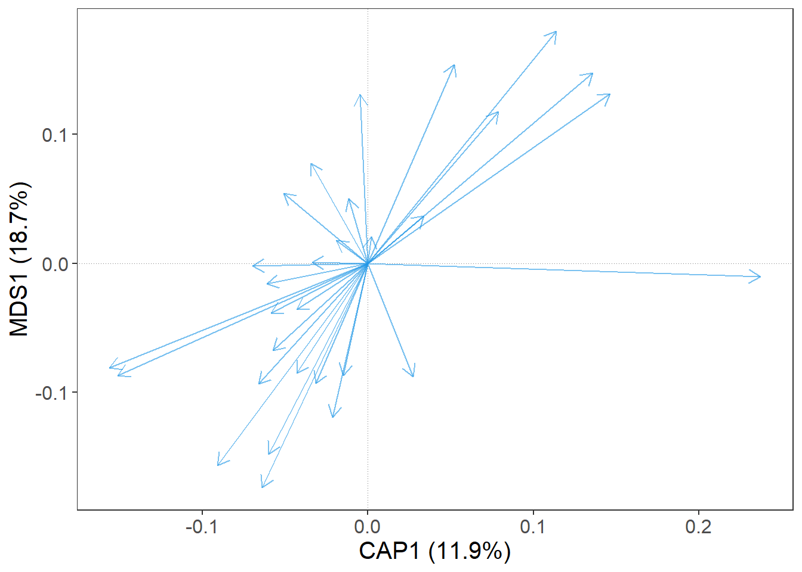
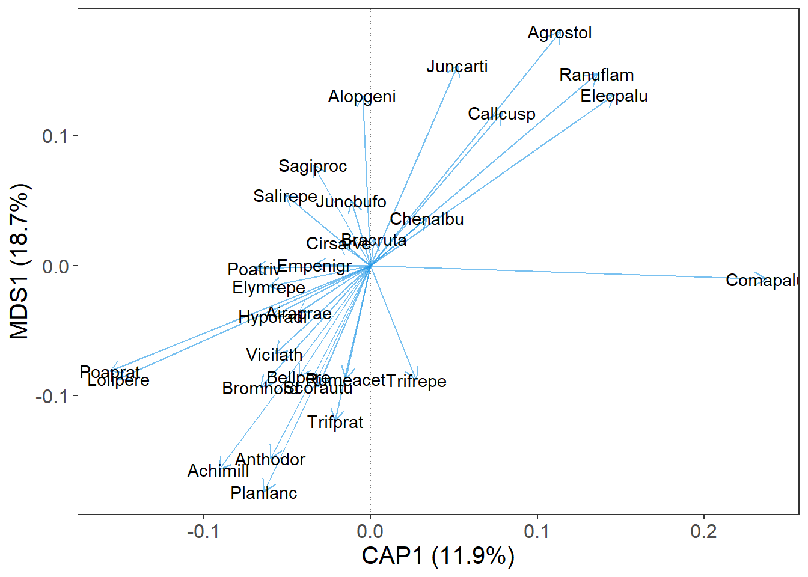
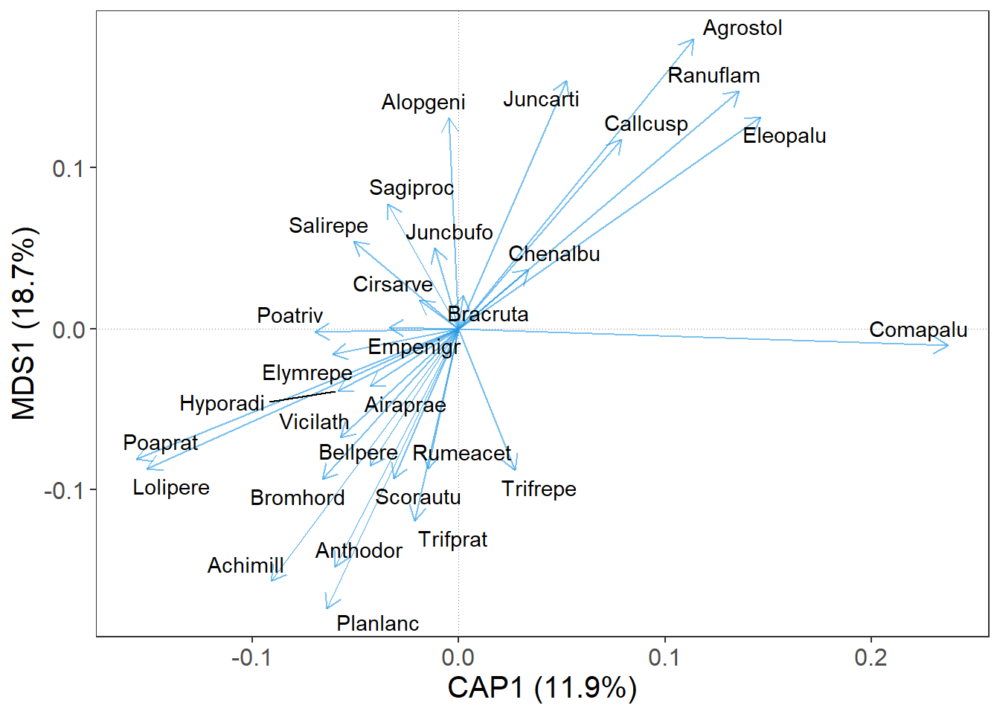
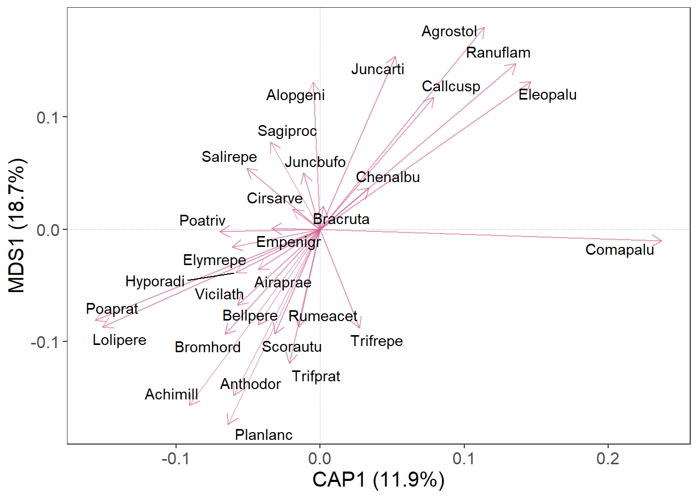
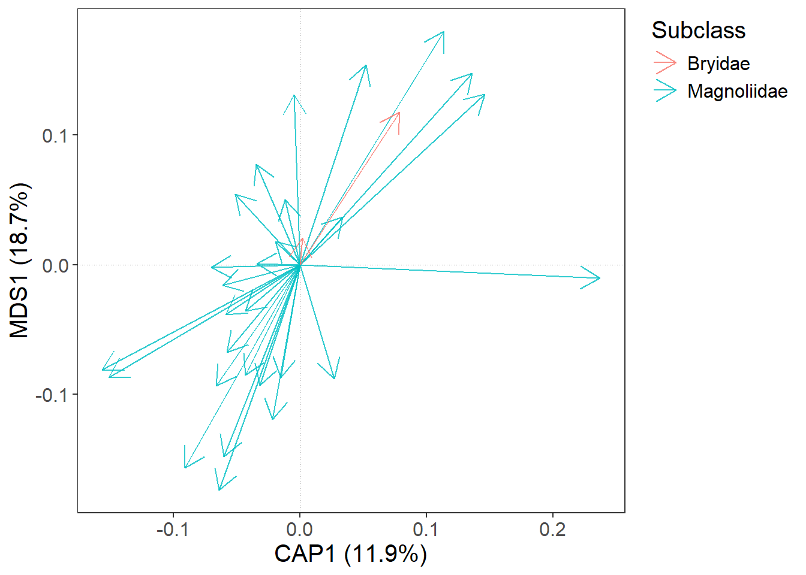
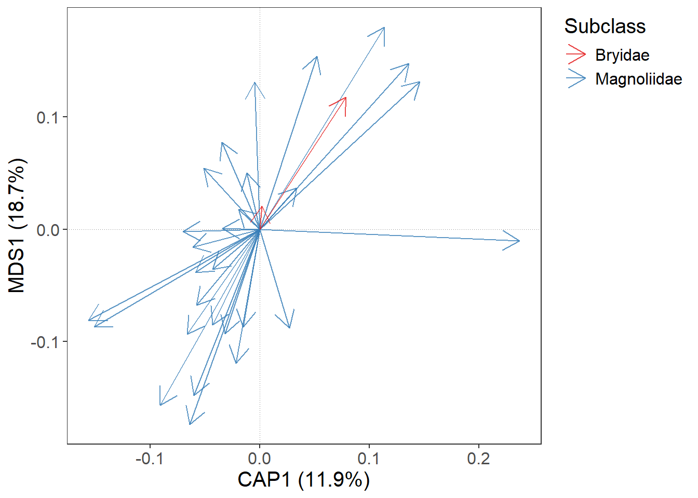
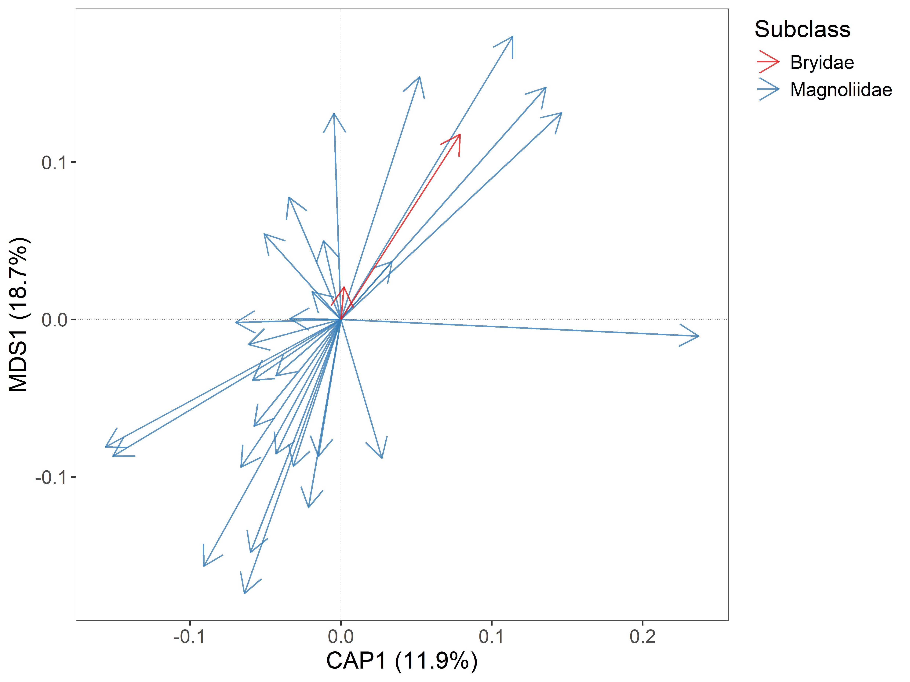
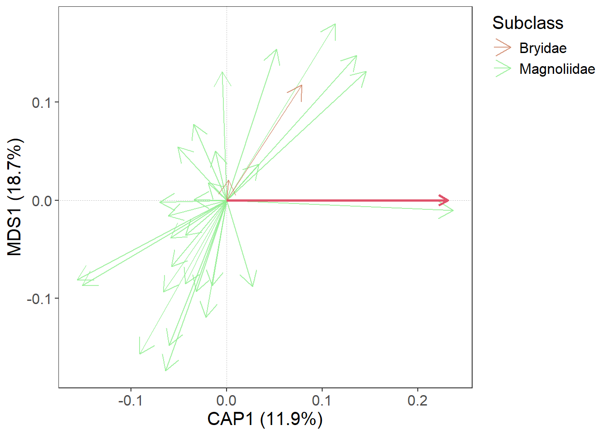
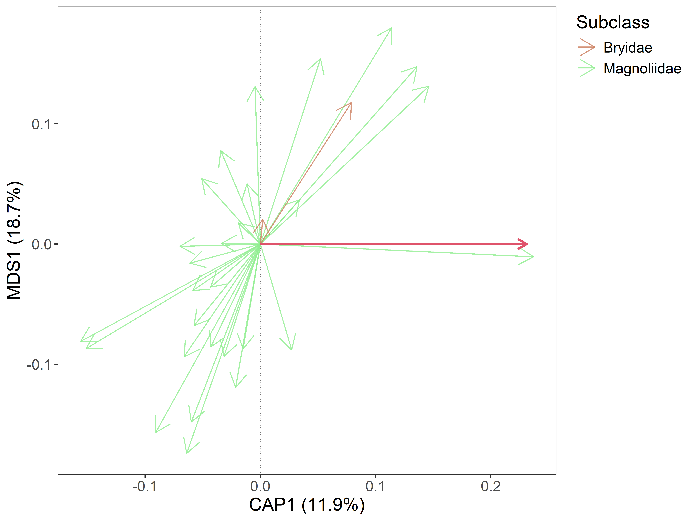
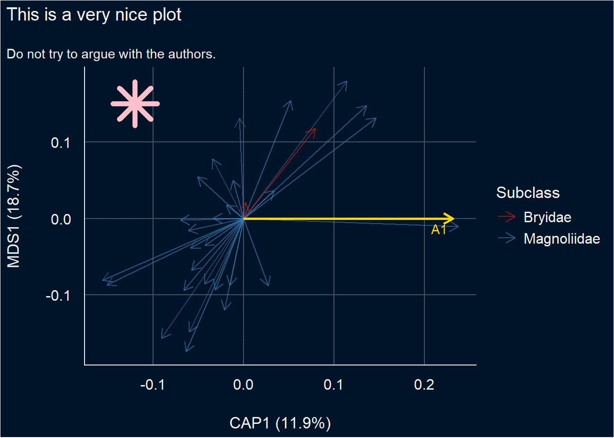

library(gordi)
library(vegan)
library(tidyverse)gordi: Plot ordination diagrams with ggplot2
 Logo by Saša Smolková
Logo by Saša Smolková
Introduction
The gordi package was developed to help students of community ecology deal with community data analysis, especially when it comes to ordination methods and the visualisation of their results in R.
With gordi, you can:
take results from common ordinations in the vegan package, particularly:
rda()for PCA and RDAcca()for CA and CCAcapscale()for PCoA and db-RDAmetaMDS()for NMDSdecorana()for DCA
visualise them quickly with clear and customisable plots via the ggplot2 framework
and have access to ggplot2 for final polishing
gordi is still under active development, so changes happen frequently. We recommend updating the package often to get the latest features. Slight differences in results between versions may occur due to these updates. gordi is currently hosted on Github as it will take some time (and many bug fixes) before it will be prepared for publication on CRAN (the main R package repository). It can be installed (or updated) using this code:
remotes::install_github('Kryshtoson/gordi')General Workflow
The functions in gordi follow some rules regarding the order in which they are called. The most important rule is, that every gordi workflow must start with the gordi_read() function. Second, gordi_ functions work the best if applied in a pipeline, as the output (pass) of one function becomes the input for the next. The pipeline approach keeps your code clean and better readable.
The ordination analysis as a whole has basically three parts. The first involves data preparation. It usually consists of synchronising taxonomical concepts in the dataset, fixing mistakes, typos, deciding what to do with outlier samples, and finally, putting the data into a format, that is acceptable by the analytical software.
In the second part, the model is typically calculated. It tends to be the shortest, but the most important one.
Only in the third part, the visualisation of results, does gordi step in. In this vignette, we will cover the second (slightly) and predominantly the third part. The first part (data preparation) is omitted here, as it is usually highly case specific, but we will mention the format of the data which gordi needs to function correctly.
1. Calculate ordination
The first step is calculating an ordination. The gordi package is compatible with the outputs of vegan functions mentioned above.
In this example, we will use the dune dataset which is available in the library vegan to calculate a simple constrained ordination (db-RDA). We will square-root the species data (often called spe) to reduce the influence of dominant species. As the environmental predictor, we will use the A1 variable which is available in the environmental table (often called env).
library(gordi)
library(vegan)
library(tidyverse)
# 1. Load example dataset
data(dune) # spe data
data("dune.env") # env data
# 2. Check if the data have the correct format
# e.g. species table must not contain any ID column,
# the number of rows in spe and env table must be the same
glimpse(dune)Rows: 20
Columns: 30
$ Achimill <dbl> 1, 3, 0, 0, 2, 2, 2, 0, 0, 4, 0, 0, 0, 0, 0, 0, 2, 0, 0, 0
$ Agrostol <dbl> 0, 0, 4, 8, 0, 0, 0, 4, 3, 0, 0, 4, 5, 4, 4, 7, 0, 0, 0, 5
$ Airaprae <dbl> 0, 0, 0, 0, 0, 0, 0, 0, 0, 0, 0, 0, 0, 0, 0, 0, 2, 0, 3, 0
$ Alopgeni <dbl> 0, 2, 7, 2, 0, 0, 0, 5, 3, 0, 0, 8, 5, 0, 0, 4, 0, 0, 0, 0
$ Anthodor <dbl> 0, 0, 0, 0, 4, 3, 2, 0, 0, 4, 0, 0, 0, 0, 0, 0, 4, 0, 4, 0
$ Bellpere <dbl> 0, 3, 2, 2, 2, 0, 0, 0, 0, 2, 0, 0, 0, 0, 0, 0, 0, 2, 0, 0
$ Bromhord <dbl> 0, 4, 0, 3, 2, 0, 2, 0, 0, 4, 0, 0, 0, 0, 0, 0, 0, 0, 0, 0
$ Chenalbu <dbl> 0, 0, 0, 0, 0, 0, 0, 0, 0, 0, 0, 0, 1, 0, 0, 0, 0, 0, 0, 0
$ Cirsarve <dbl> 0, 0, 0, 2, 0, 0, 0, 0, 0, 0, 0, 0, 0, 0, 0, 0, 0, 0, 0, 0
$ Comapalu <dbl> 0, 0, 0, 0, 0, 0, 0, 0, 0, 0, 0, 0, 0, 2, 2, 0, 0, 0, 0, 0
$ Eleopalu <dbl> 0, 0, 0, 0, 0, 0, 0, 4, 0, 0, 0, 0, 0, 4, 5, 8, 0, 0, 0, 4
$ Elymrepe <dbl> 4, 4, 4, 4, 4, 0, 0, 0, 6, 0, 0, 0, 0, 0, 0, 0, 0, 0, 0, 0
$ Empenigr <dbl> 0, 0, 0, 0, 0, 0, 0, 0, 0, 0, 0, 0, 0, 0, 0, 0, 0, 0, 2, 0
$ Hyporadi <dbl> 0, 0, 0, 0, 0, 0, 0, 0, 0, 0, 2, 0, 0, 0, 0, 0, 2, 0, 5, 0
$ Juncarti <dbl> 0, 0, 0, 0, 0, 0, 0, 4, 4, 0, 0, 0, 0, 0, 3, 3, 0, 0, 0, 4
$ Juncbufo <dbl> 0, 0, 0, 0, 0, 0, 2, 0, 4, 0, 0, 4, 3, 0, 0, 0, 0, 0, 0, 0
$ Lolipere <dbl> 7, 5, 6, 5, 2, 6, 6, 4, 2, 6, 7, 0, 0, 0, 0, 0, 0, 2, 0, 0
$ Planlanc <dbl> 0, 0, 0, 0, 5, 5, 5, 0, 0, 3, 3, 0, 0, 0, 0, 0, 2, 3, 0, 0
$ Poaprat <dbl> 4, 4, 5, 4, 2, 3, 4, 4, 4, 4, 4, 0, 2, 0, 0, 0, 1, 3, 0, 0
$ Poatriv <dbl> 2, 7, 6, 5, 6, 4, 5, 4, 5, 4, 0, 4, 9, 0, 0, 2, 0, 0, 0, 0
$ Ranuflam <dbl> 0, 0, 0, 0, 0, 0, 0, 2, 0, 0, 0, 0, 2, 2, 2, 2, 0, 0, 0, 4
$ Rumeacet <dbl> 0, 0, 0, 0, 5, 6, 3, 0, 2, 0, 0, 2, 0, 0, 0, 0, 0, 0, 0, 0
$ Sagiproc <dbl> 0, 0, 0, 5, 0, 0, 0, 2, 2, 0, 2, 4, 2, 0, 0, 0, 0, 0, 3, 0
$ Salirepe <dbl> 0, 0, 0, 0, 0, 0, 0, 0, 0, 0, 0, 0, 0, 0, 0, 0, 0, 3, 3, 5
$ Scorautu <dbl> 0, 5, 2, 2, 3, 3, 3, 3, 2, 3, 5, 2, 2, 2, 2, 0, 2, 5, 6, 2
$ Trifprat <dbl> 0, 0, 0, 0, 2, 5, 2, 0, 0, 0, 0, 0, 0, 0, 0, 0, 0, 0, 0, 0
$ Trifrepe <dbl> 0, 5, 2, 1, 2, 5, 2, 2, 3, 6, 3, 3, 2, 6, 1, 0, 0, 2, 2, 0
$ Vicilath <dbl> 0, 0, 0, 0, 0, 0, 0, 0, 0, 1, 2, 0, 0, 0, 0, 0, 0, 1, 0, 0
$ Bracruta <dbl> 0, 0, 2, 2, 2, 6, 2, 2, 2, 2, 4, 4, 0, 0, 4, 4, 0, 6, 3, 4
$ Callcusp <dbl> 0, 0, 0, 0, 0, 0, 0, 0, 0, 0, 0, 0, 0, 4, 0, 3, 0, 0, 0, 3glimpse(dune.env)Rows: 20
Columns: 5
$ A1 <dbl> 2.8, 3.5, 4.3, 4.2, 6.3, 4.3, 2.8, 4.2, 3.7, 3.3, 3.5, 5.8,…
$ Moisture <ord> 1, 1, 2, 2, 1, 1, 1, 5, 4, 2, 1, 4, 5, 5, 5, 5, 2, 1, 5, 5
$ Management <fct> SF, BF, SF, SF, HF, HF, HF, HF, HF, BF, BF, SF, SF, NM, NM,…
$ Use <ord> Haypastu, Haypastu, Haypastu, Haypastu, Hayfield, Haypastu,…
$ Manure <ord> 4, 2, 4, 4, 2, 2, 3, 3, 1, 1, 1, 2, 3, 0, 0, 3, 0, 0, 0, 0nrow(dune) == nrow(dune.env)[1] TRUE# 3. Calculate the db-RDA ordination
m <- capscale(sqrt(dune) ~ A1,
data = dune.env, # we have to provide env table with predictors,
# so the model knows where to look for the predictor
distance = 'bray', # 'Bray-Curtis dissimilarity' - a common choice for community data
sqrt.dist = T) # square-rooted Bray-Curtis dissim. does not produce
# Imaginary Inertia (negative eigenvalues),
# which is problematic, when it comes to determining
# how much variability in the data the model explained2. Read the ordination result
Now it is time for the first gordi function. gordi_read() reads the resulting object of the ordination (m) and prepares it for use by other gordi_ functions. That said, gordi_read() has to always be the first in the pipeline of gordi_ functions.
gordi_read() has many arguments, which greatly influence how the final plot will look like. You can set here the scaling of the plot, select the ordination axes you want to look at. You can also provide env, spe and traits data which you can later use for variable based symbolisation of sites or species in the plot or for passive projection of variables onto unconstrained ordination.
For more details regarding the arguments used in the gordi_read() please check the help page of the scores() function in the vegan package.
Note: If you check the help page for “scores”, it will be rather laconic. For more details on the arguments and how do they influence the calculation of scores, you have to look for the ordination type specific
scores()function, such as “scores.rda” or “scores.cca”.
Note: Don’t panic when you see the large output printed to the Console. This is the
passobject which travels through the pipeline ofgordi_functions carrying all the necessary information needed for plotting. You can easily check if you entered the right data.
# Print ordination result
m
Call: capscale(formula = sqrt(dune) ~ A1, data = dune.env, distance =
"bray", sqrt.dist = T)
Inertia Proportion Rank
Total 5.699 1.000
Constrained 0.678 0.119 1
Unconstrained 5.021 0.881 18
Inertia is Bray distance
-- NOTE:
Species scores projected from 'sqrt'
Species scores projected from 'dune'
Eigenvalues for constrained axes:
CAP1
0.678
Eigenvalues for unconstrained axes:
MDS1 MDS2 MDS3 MDS4 MDS5 MDS6 MDS7 MDS8
1.0664 0.8972 0.5421 0.4314 0.4050 0.2744 0.2453 0.1891
(Showing 8 of 18 unconstrained eigenvalues)# Use `gordi_read()` to read the ordination result
m |>
gordi_read(
choices = 1:2, # we want to look at the first two ordination axes
scaling = 'species', # we want to focus on the species
correlation = T
)$m
Call: capscale(formula = sqrt(dune) ~ A1, data = dune.env, distance =
"bray", sqrt.dist = T)
Inertia Proportion Rank
Total 5.699 1.000
Constrained 0.678 0.119 1
Unconstrained 5.021 0.881 18
Inertia is Bray distance
-- NOTE:
Species scores projected from 'sqrt'
Species scores projected from 'dune'
Eigenvalues for constrained axes:
CAP1
0.678
Eigenvalues for unconstrained axes:
MDS1 MDS2 MDS3 MDS4 MDS5 MDS6 MDS7 MDS8
1.0664 0.8972 0.5421 0.4314 0.4050 0.2744 0.2453 0.1891
(Showing 8 of 18 unconstrained eigenvalues)
$type
[1] "db-RDA"
$explained_variation
CAP1 MDS1 MDS2 MDS3 MDS4 MDS5 MDS6
0.11897706 0.18713012 0.15743892 0.09512279 0.07570342 0.07107262 0.04815021
MDS7 MDS8 MDS9 MDS10 MDS11 MDS12 MDS13
0.04304449 0.03318727 0.02994104 0.02652510 0.02343062 0.01907886 0.01792983
MDS14 MDS15 MDS16 MDS17 MDS18
0.01486430 0.01220752 0.01074280 0.00844054 0.00701251
$choices
[1] 1 2
$scaling
[1] "species"
$correlation
[1] TRUE
$hill
[1] FALSE
$const
[1] 2 2
$axis_names
[1] "CAP1" "MDS1"
$site_scores
# A tibble: 20 × 2
CAP1 MDS1
<dbl> <dbl>
1 -0.756 -0.0517
2 -0.563 -0.208
3 -0.211 0.143
4 -0.263 0.150
5 -0.505 -0.818
6 -0.454 -0.552
7 -0.559 -0.367
8 0.287 0.568
9 -0.0969 0.397
10 -0.590 -0.467
11 -0.426 -0.197
12 0.295 0.301
13 0.318 0.313
14 1.23 -0.000327
15 1.24 -0.124
16 0.867 0.814
17 -0.326 -0.476
18 -0.312 -0.352
19 -0.0791 0.00428
20 0.905 0.922
$species_scores
# A tibble: 30 × 2
CAP1 MDS1
<dbl> <dbl>
1 -0.0908 -0.157
2 0.114 0.180
3 -0.0431 -0.0358
4 -0.00467 0.131
5 -0.0600 -0.148
6 -0.0430 -0.0854
7 -0.0662 -0.0937
8 0.0338 0.0367
9 -0.0191 0.0176
10 0.237 -0.0106
# ℹ 20 more rows
$predictor_scores
# A tibble: 1 × 4
CAP1 MDS1 score label
<dbl> <dbl> <fct> <chr>
1 1 0 biplot A1
$species_names
# A tibble: 30 × 1
species_names
<chr>
1 Achimill
2 Agrostol
3 Airaprae
4 Alopgeni
5 Anthodor
6 Bellpere
7 Bromhord
8 Chenalbu
9 Cirsarve
10 Comapalu
# ℹ 20 more rows
$predictor_names
# A tibble: 1 × 1
predictor_names
<chr>
1 A1
$env
NULL
$spe
NULL
$traits
NULL3. Choose, what to display
At this point, we actually start plotting. The first decision often is, whether we want to display ‘species’ or ‘sites’ (samples) scores. In the previous example we decided, we want to focus on ‘species’, so we set the scaling = 'species'.
The scaling parameter determines how the scores are calculated. If we set scaling = 'species', the plot is optimised in a way that species relationships are displayed correctly (i.e., arrows pointing in similar directions or close together means the species co-occur or respond similarly). This applies also for the situation when we want to look at ‘sites’ (samples) and we set scaling = 'sites'.
Note: The word “scores” (or “ordination scores”) might sound unfamiliar, but scores are simply the “coordinates” of each species or site (sample) on the ordination axis. They represent where that site (sample) or species falls in the multidimensional space that the ordination creates.
On the other hand, if we set scaling = 'sites' and then we display ‘species’, their relative position will be harder to interpret. It still might be useful to look at both scores (sites and species) in one plot, but we have to keep on mind, that only what we scaled for will be displayed correctly.
There is also a third, compromising option how to display both, species and site (sample) scores at once, and this is scaling = 'symmetric'. The scores of both, species and sites, are moderately distorted (‘re-scaled’) but not that much as when you scale for species and display sites (and vice versa).
So, this was about scaling, but to actually display sites or species, we have to add another gordi_ function to the pipeline:
- If you have decided to display species, use
gordi_species() - If you have decided to display sites, use
gordi_sites()
m |>
gordi_read(choices = 1:2, scaling = 'species', correlation = T) |>
gordi_species()
OK, good. We have a bunch of blue arrows. Each arrow represent one species, but which one? For a quick information, we can set argument label = T.
m |>
gordi_read(choices = 1:2, scaling = 'species', correlation = T) |>
gordi_species(label = T)
Nice. We can see, that the names of species in the dune data set are already shortened, so we have to do nothing more about it. In case, when the data set is not that nicely prepared and you have the whole species names in the column names in the spe table (e.g. Achillea millefolium agg.), the plot gets crowded rapidly. For this purposes, there is a handy function gordi_label() which can create nice species names shortcuts.
Note: Another solution for an overcrowded plot is the
gordi_fit()function which filters out less frequent species or species which have weak correlation with the displayed ordination axes. Check its help page.
What else can we improve is the position of the species names, so they do not overlap each other. For this, set the argument repel_label = T.
m |>
gordi_read(choices = 1:2, scaling = 'species', correlation = T) |>
gordi_species(label = T, repel_label = T)
We can also decide, that arrows will look better in ‘hotpink3’.
m |>
gordi_read(choices = 1:2, scaling = 'species', correlation = T) |>
gordi_species(label = T, repel_label = T, colour = 'hotpink3')
4. Change aestethics
In gordi_species() and gordi_sites() we can map colour, fill, shape, and many more things with regard to some variable (‘dynamically’). Instead of setting colour = ‘hotpink3’, we will set colour = 'Subclass'. This will give different colours to species from different Subclasses.
Note: For species, this variable (
Subclass) must be supplied to thetraitsargument as a tibble or data frame. This table has a strict format: the first column must contain species names that exactly match the column names in the spe table. In every following column, every species must have assigned only one value.
# At first, we need to prepare traits table to be compatible with species table.
# The first column in the traits table must contain species names as used in species table
data('dune.taxon')
traits <- as_tibble(dune.taxon, rownames = 'species')
# Now we continue with the gordi pipeline
m |> gordi_read(
env = dune.env, # table with environmental variable
traits = traits, # table with traits, respective in this case,
# table with species names, families and
# other stuff is used
choices = 1:2, # choose 1st and 2nd ordination axes
correlation = T,
scaling = 'species' # we want to display species, we choose scaling = 'species'
) |>
gordi_species(
colour = 'Subclass', # colour may be set statically,
# or dynamically, by using name of some
# variable in traits data frame
alpha = 0.8, # opacity of symbols
arrow_size = 0.5) # changes arrow size (in cm)
However, these two functions allows you to use only the default colour palettes or shapes.
If we want to select some predefined or custom colour scale or different shapes, we have to do it immediately after gordi_species() or gordi_sites() with gordi_colour() and gordi_shape() functions. - gordi_colour() controls both, colour and fill (by setting argument fill = T/F) - gordi_shape() controls point shape (for details about the numbers of shape, see ?pch)
m |> gordi_read(env = dune.env,
traits = traits,
choices = 1:2,
correlation = T,
scaling = 'species') |>
gordi_species(colour = 'Subclass',
alpha = 0.8,
arrow_size = 0.5) |>
gordi_colour(scale = 'discrete', # first, you must define the scale (see
# ?gordi_colour() for options)
family = 'brewer') # then you must select from a family of colour scales or set one manually 
We may want to set the colours manually. This is also possible with gordi_colour() (or gordi_shape()) and in this case, we set the first two arguments like this: scale = 'discrete, family = 'manual, and then we have to define values = c('lightsalmon3', 'palegreen2')
m |> gordi_read(env = dune.env,
traits = traits,
choices = 1:2,
correlation = T,
scaling = 'species') |>
gordi_species(colour = 'Subclass',
alpha = 0.8,
arrow_size = 0.5,
linewidth = 0.5) |>
gordi_colour(scale = 'discrete', # first, you must define the scale (see
# ?gordi_colour() for options)
family = 'manual',
values = c('lightsalmon3', 'palegreen2'))
5. Add predictors
At the beginning, we calculated constrained ordination (RDA). Predictors also have their scores and we will now use gordi_predict() to add them to the plot.
m |> gordi_read(env = dune.env,
traits = traits,
choices = 1:2,
correlation = T,
scaling = 'species') |>
gordi_species(colour = 'Subclass',
alpha = 0.8,
arrow_size = 0.5,
linewidth = 0.5) |>
gordi_colour(scale = 'discrete',
family = 'manual',
values = c('lightsalmon3', 'palegreen2')) |>
# here, we apply gordi_predict
gordi_predict()
As before, we want to see the name of the predictor variable. Or possibly to change the colour, linewidth, linetype or alpha of the arrow.
m |> gordi_read(env = dune.env,
traits = traits,
choices = 1:2,
correlation = T,
scaling = 'species') |>
gordi_species(colour = 'Subclass',
alpha = 0.8,
arrow_size = 0.5,
linewidth = 0.5) |>
gordi_colour(scale = 'discrete',
family = 'manual',
values = c('lightsalmon3', 'palegreen2')) |>
# here, we apply gordi_predict
gordi_predict(
show_label = T, # whether label should be shown
repel_label = T, # should it be repelled?
colour = 'royalblue3', # colour of the arrow (static - if there were more arrows, all would be the same)
linewidth = 1.5, # default = 1
linetype = 4, # default = 1, for more linetypes see linetype help page
alpha = 0.7 # opacity of the arrow
)
6. Customise the plot
To further customise the ordination plot, we need to do one more thing. We must end the gordi pipeline with gordi_plot() which extracts the ggplot object and makes it available for standard ggplot2 functions. From this point, the long pass object, which appears in the Console every time you run some gordi_ function is lost.
Note: Don’t forget, that traditional ggplot2 functions use the
+sign, not pipe operator|>.
library(see)
m |>
gordi_read(env = dune.env,
traits = traits,
choices = 1:2,
scaling = 'species',
correlation = T) |>
gordi_species(colour = 'Subclass') |>
gordi_colour(scale = 'discrete', family = 'brewer') |>
gordi_predict(show_label = T, repel_label = T, colour = 'gold') |>
gordi_plot() + # from here, we are using standard ggplot2 syntax (with "+")
theme_abyss() + # change default theme
labs(title = 'This is a very nice plot', # add custom title and subtitle
subtitle = 'Do not try to argue with the authors.') +
geom_point(aes(x = -0.12, y = 0.15), # add another layer (data must be defined manually, no plotting data pass behind the gordi_plot())
shape = 8, size = 10, colour = 'pink', stroke = 3) 
List of gordi_ functions
gordi_read()- Reads the output from theveganordination model and translates it to be used bygordi_functions. (Must be first in the pipeline)gordi_sites()- Displays Site (sample) coordinates (scores) and default labels.gordi_species()- Displays Species coordinates (scores) and default labels.gordi_predict()- Displays Predictor scores from constrained ordinations (like RDA or CCA).gordi_corr()- Passively fits environmental variables onto unconstrained ordination axes (wrapper forvegan::envfit).gordi_fit()- Filters species based on \(R^2\) with axes or frequency in the dataset. Must be placed beforegordi_species().gordi_colour()- Changes default colour palettes when mapped dynamically. Must be applied immediately after what it should change.gordi_shape()- Changes default point shapes when mapped dynamically. Must be applied immediately after what it should change.gordi_label()- Adjusts labels for species, sites, and predictors. Useful for creating taxon shortcuts.gordi_cluster()- Draws spiders or hulls (polygons) around groups of sites.gordi_plot()- Extracts the plot object for customisation with standardggplot2syntax.
Limitations
Even though gordi_ can do a lot of things, there are still many parts of the intended package, which are now under construction. What you may expect it to do but is not possible yet:
- displaying results of constrained ordination with interactions correctly. There is a discussion about how to calculate the interaction scores correctly, as they are not provided in the output from the
scores()function (or at least many of them are missing). - analogue to
vegan::ordisurf